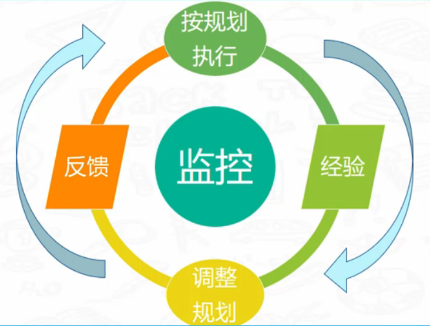

一、IT项目管理是什么？
1.使用知识、技能、工具、技术，满足范围、时间、成本、质量
2.大部分时间在沟通，风险、变更、干系人
3.五大过程组：启动、规划、执行、监控、收尾
4.需求管理很重要
二、项目经理的职责与特质
1.职责：
- 参与售前，编写方案，介绍方案
- 负责公司产品研发项目开发的组织与管理，包括项目启动、执行、监控、变更、验收等的组织与管理
- 沟通项目需求，从技术角度评估需求的合理性，评估项目开销（人力、周期、风险、预算等）及可行性
- 承担产品研发项目的过程控制、成本控制、进度控制、质量控制、风险控制等，确保按时，保持完成项目
- 积极主动向上级汇报项目进度，积极主动与团队沟通，与客户积极沟通，推进项目顺利进行
- 负责与其他相关团队（产品、测试、运营等）的沟通配合与协调工作
- 参与公司软件技术框架的确立，控制团队代码质量，解决技术难点
- 项目团队管理，确保团队资源的稳定性及工作效率
- 搭建系统开发环境，完成系统框架和核心代码编写，项目优化
2.特质：
- 积极
- 负责任
- 自信
- 坚持
- 变通
三、IT项目售前和5个项目阶段工作
1.售前支持做什么？
- 需求沟通
- 评估工时
- 估算成本
- 估算计划
- 报价评审
2.立项做什么
- 1）立项策略
- 项目管理过程裁剪：合适的项目过程及模板
- 项目章程
- 2）立项评审
- 专家评审立项策略：PMO、专家做可行性分析
- 3）项目启动会
- 召开启动会：步入正规、承诺
3.项目规划作什么：
- 整体计划
- 沟通计划
- 人资计划
- 风险计划
- 成本计划
- 干系人计划
- 质量计划
- 时间计划
- 范围计划
- 采购计划
- 变更计划
4.所有计划基于假设，滚动式规划
5.执行做什么

6.小项目周报
7.监控范围是全部的，根据项目的活动内容，包括外部和内部监控
- 时间、成本、质量、范围、风险、采购、满意度
四、实战IT项目流程与管理流程
1.IT项目流程
- 前期分析->项目评估->合同签署->项目规划->需求分析->系统设计->系统开发->系统测试->系统培训->系统实施->系统验收->系统维护
2.IT项目管理过程
五、立项基线与验收标准的规定
1.立项基线怎么定？
- 基线定义：特指项目的规范、应用标准、进度指标、费用指标以及人员和其他资源使用指标
- 范围：主要是过程裁剪、验收范围、成本预算、工作量预算、计划
- 调整：一般立项后一个月内允许调整，过程中有变更客户认可，也可以调整
2.立项时验收标准：时间、需求、质量、交付物
六、立项时领导不重视
1.找原因：直接问领导，或者问跟领导关系好的人
2.表态度：表示你需要支持，说明他的支持很重要
3.具体化：明确你需要什么样的支持很重要
4.调沟通：主动使用邮件+电话汇报工作，增加沟通频率
5.多请教领导，希望给点建议
七、立项时明确干系人
1.直属领导：团队、PMO、销售、其他
2.客户项目负责人：对接人、使用者、供应商
八、立项启动会
1.启动会议的主要内容：
- 介绍会议目的与项目背景
- 项目和总体要求
- 概括性的项目描述
- 项目和总体预算
- 可测量的项目目标和相关的成功标准
- 项目的主要风险
- 总体里程碑进度计划
- 项目审批要求
- 委派的项目经理及其职责和职权
- 项目的变更管理及其职责和职权
- 项目的变更管理程序及相应权限
- 发起人或其他批准项目任务的人员的姓名和职权
2.项目启动会应避免的问题
- 相关领导没请到
- 公司内部的相关人员没来全
- 没有说清楚项目的职责结构
- 没有把项目的总体情况和执行计划通报清楚
3.启动会议8项注意
- 注重面向未来
- 了解期望
- 切记落实会后1-2周的工作安排
- 重点强调变更程序协调和问题升级程序
- 尽力争取承诺
- 关键因素是什么
- 拍照留念
九、规划过程中遇到的问题
1.做计划要清晰哪些点
- 范围：功能
- 时间：多长时间完成
- 团队：薪资结构（跟人力打好关系）、原始简历
- 质量：客户定义
- 采购：制度
- 风险：风险登记册（excel）、RBS（风险登记结构）
- 成本：管理储备、应急储备、自下而上、中大型用挣值
- 沟通：90%时间在沟通
- 干系人：主要干系人、小项目较多（项目团队中发展你自己的小项目助理）
十、整体计划
1.整体计划：
- 采购计划
- 范围计划
- 时间计划
- 人资计划
- 风险计划
- 成本计划
- 质量计划
- 沟通计划
- 干系人计划
- 变更计划
2.计划是基于假设
3.如何做
- 里程碑：最大一个月一个，最小两周
- 结构化：WBS
- 多沟通：与相关领导负责人沟通审核，不停修改
- 确定结果
十一、范围计划
1.范围计划
- 1）不做的事
- 合适的范围内，客户确认，做圈里面的事
- 谈钱的事不做
- 减工时的事不做
- 对自己和团队不利的事（镀金）
- 2）调研人员：确定人员（内外部）
- 3）调研时间：确定好内外调研时间（内部员工、外部客户）
- 4）调研模板：公司资产、网上找之类的
- 5）调研方式：访谈、观察
- 6）签字确认：项目经理参与
2.分歧原因
- 没有说清楚
- 没有明确目标
- 长时间政策环境组织结构发生变化
3.项目范围说明书
- 对于没有说清楚的记录下
- 假设条件：先记录、举例
- 明确记录之后需要讨论的
- 核实：责任、分工、交付成果、过程文件
- 项目的目标不等于项目的范围
- 宁可消除客户事前不切实际的期望，也不要让客户最后希望破灭
4.范围计划制定
- WBS清单
- 确定依赖关系
- 制定网络图
- 确定资源配置/调整/平衡
- 确定项目预算
- 开会讨论
十二、时间计划
1.时间计划
- 活动分解
- 活动排序
- 活动资源
- 活动持续时间
- 制定进度计划
- 控制进度
2.项目进度计划
- Project Schedule
- 是进度模型的输出，展示活动之间的相互关联，以及计划日期、持续时间、里程碑和所需资源
- 表现方式：横道图、里程碑图、项目进度网络图
3.进度数据
- 进度数据是用以描述和控制进度计划的信息集合
- 至少包括进度里程碑、进度活动、活动属性，以及已知的全部假设条件与制约因素
- 经常做为支持细节的信息包括：
- 以资源直方图表示的按时段计列的资源需求
- 备选的进度计划：最好最坏情况下的进度计划、经资源平衡或未经资源平衡的、有强制和无强制日期的
- 进度应急储备等
4.项目日历
- 在项目日历中规定可以开展进度活动的工作日和工作班次
- 把可用于开展进度活动的时间段与不可用的时间段区分开
5.时间计划怎么做
- 里程碑
- 工作任务
- 任务排序
- 资源安排
- 计划评审
十三、风险计划
1.不确定性是项目环境的一个显著特征
2.风险四要素：起因、概率、事件、影响
3.风险后果分：经营风险（关注）、纯风险/可保风险
4.可预测性分：已知风险、未知风险
5.风险偏好：风险厌恶者、风险中立者、风险追求者
6.风险计划
- 风险清单：模板、内容、获取
- 风险分析：概率、大小、请教
- 风险应对：可执行、点对点
十四、采购计划
1.采购计划
- 采购方式
- 采购风险
- 采购成本
- 质量标准
- 采购时间
- 采购内容
十五、人力资源计划
1.持续：
- 组建团队
- 建设团队
- 管理团队
2.项目经历负责培训
3.冲突七大来源：进度、项目优先级、资源、技术意见、行政程序、成本、个性
十六、质量计划
1.质量计划
- 支持过程
- 工程过程
- 管理过程
- 审核方式
- 审核依据
2.和QA搞好关系
十七、成本计划
1.考虑时间、人员、运营
2.尽量想周全
3.软件毛利率在30%左右可以接受
十八、变更计划
1.减少变更
- 说明变更流程
- 避免闷头做
- 没有一个项目只做一次就完事的
- 高层参与变更核心细节
- 签字流程
2.变更流程
- 授权：谁有权提出、谁有权受理
- 审核：确定优先级
- 评估：评估影响，高层好判断
- 确认：让所有人知道，确认是否接受代价
3.变更控制是让变更变得更加有序
4.变更表：大家都签字确认了再干活
十九、干系人计划
1.干系人计划：更好地沟通
- 主要人员
- 职位权利
- 联系方式
- 项目影响
- 支持态度
- 关注级别
二十、沟通计划
1.沟通计划-内部：
- HR
- 团队
- 领导
2.沟通计划-外部：
- 监督者
- 对接人
3.沟通
- 日会
- 周会
- 月会
- 里程碑
4.项目进展抄送领导
5.领导一周一次汇报
6.监督者一周开会一次
7.沟通对象及方法
- 高层领导——提供系统整体架构和流程
- 业务主管——业务流程图描述系统建设内容
- 技术人员——数据流程图、实体关系图各种图各种角度
- 各流程用户——原型图、挖掘用户需求
8.日站立会
- 每天早上10-20分钟
- 了解进度；尽早暴露问题；增强沟通；明确目标
- 项目组人员
- 分送参会人员
9.项目周会
- 每周五下午20-40分钟
- 本周进度，重视质量，表扬进步人员；下周计划；本周困难和问题；困难和问题解决方案；需要什么支持；需要改进的点
- 项目组人员、领导（看情况）
- 分送参会人员、客户经理、公司领导
10.项目月度例会
- 周五30-50分钟
- 本月进度，重视质量，表扬进步人员；下月计划；本月困难和问题；困难和问题解决方案；需要什么支持；需要改进的点；需要跟进客户测试
- 小组代表、双方PM、双方领导
- 分送参会人员、客户经理、客户测试人员、双方领导
11.里程碑汇报
- 周五30-50分钟
- 进度偏差；困难和问题；解决方案；下个里程碑计划
- 小组代表、双方PM、双方领导
- 分送参会人员、客户经理、客户测试人员、双方领导
二十一、需求开发计划
1.重要性：
- 需求是产品的根源，需求工作的优劣对产品影响最大
- 国内软件业的顽疾：人们并不清楚究竟该做什么，但却一直忙碌不停地开发
- 软件项目中百分之四十至百分之六十的问题都是在需求分析阶段埋下的“祸根”
2.流程：

3.开发计划：
- 时间
- 人物
- 方式
- 模板
- 方法
- 编写
- 优先级
- 验证
4.需求获取的方法：
- 同类产品
- 调查问卷
- 界面原型
- 实地观察
- 专家意见
5.需要了解的内容：
- 组织机构
- 用户角色
- 业务需求
- 功能需求
- 非功能需求
- 干系人的过程需求
- 干系人的个人需求
二十二、需求调研的问题与方案
1.调研不配合怎么办
- 有情绪别工作
- 换位思考
- 请求支援
2.避免需求调研范围扩大
- 参与人员必须有一个是业务比较熟悉的
- 沟通过程问题提出尽量采用封闭提问
- 调研周期固定，采用文档加原型的方式，在固定时间内确认需求
- 强调核心流程，强调最大价值流程
3.客户说所有的点都重要怎么办
- 业务类型划分
- 重要程度细分
- 先完成核心任务
二十三、团队组建、建设、管理
1.好的工作状态比差的工作状态效率要高一倍以上
2.团队组建怎么做：
- 人事：人情社会，搞定人搞定事
- 招人：高级架构、爱学习的这两个人必须要有，需要一个测试除非特别小的项目
- 职责：组长，开发测试配比
- 面试：沟通、基础、设定场景，面试评价表，客观评价
- 评价：成长
- 了解
- 沟通
3.组建方式：
- 1）部门原成员做为核心员工+招聘新成员做为补充
- 2）全部外聘

4.团队建设
- 持续循环：引导->培训->机制->活动->鼓励->惩罚->沟通
- 男女搭配干活不累，测试、UI、产品等
- 鼓励要及时、经常、引导方向、到位
5.团队管理
- 冲突管理：面对、合作、妥协、缓解、强迫
- 沟通管理：多了解团队想法、多鼓励多赞美、要处两个亲信
- 关注成员的成长、情绪、职业规划
二十四、沟通问题
1.沟通不下去怎么办
- 循环：检查Check->纠正Act->计划Plan->执行Do
2.找对干系人
3.找对方法
4.找对时间
5.认真执行
6.嚣张老员工：
- 知道他嚣张的资本
- 为什么抵触你
- 不要用官职来压对方，要表示尊重
- 要让对方知道没有他工作一样可以做
- 让老板知道你的难处，但不要指望老板直接介入
二十五、进度延迟、资源不足、迟到问题
1.项目延期原因
- 学生综合征：学生总是把作业拖到最后一天才做，即使前面有时间
- 提前受罚：这次提前完成就意味着下次得到的工作量就更多
- 解决：分析影响、调整计划、上报领导
2.人员不能正常到岗
- 进人开做
- 跟领导沟通
- 跟HR沟通
- 跟客户沟通
- 入职准备
3.总有人迟到
- 制度：监督、执行，让HR去执行
- 让员工感到迟到不可耻，公司理解你，但你也要理解公司
- 不要影响大局
- 惩罚、奖励、认真执行、私下沟通
二十六、态度不好、抱怨加班、冲突问题
1.员工态度不好
- 了解原因
- 了解能力
- 沟通引导
- 帮忙找工作
2.抱怨加班
- 我不愿意加班，但比多数人员加班多
- 去了解员工不加班的原因
- 是否有真正有加班的必要
- 帮助提高效率，必要时引导加班
3.技术人员和老员工的冲突问题
- 工作流程不清楚：管理机制明确、PM主动承担责任
- 不同理解和看法：召开技术论证会、PM要中立，客观
- 人际关系的矛盾：如进修培训的机会、职位的推荐PM尽可能公司，对于性格问题尽量劝架、尽量让双方回避
- 人际关系技能：建立信任、激励制度、积极倾听、解决冲突
二十七、监控项目沟通情况
1.许多专家认为项目失败的重要原因是沟通的失败
2.沟通是为了能够尽早明确需求，双方人员尽快进入状态，客户配合度高项目能按计划进行，并且项目上线和验收顺利，以及时回款
3.项目内外干系人进行有效的沟通可以规避/降低风险
4.日会，周会，月会，里程碑会议，监控沟通过程和结果
- 清晰问题，解决方案，执行问题，监控执行
- PM强调目标，引导团队自己解决
5.电话，邮箱，及时沟通工具等正式和非正式沟通
- 内部团队
- 外部干系人
6.为避免客户反感，PM在与客户谈变更整个过程，不谈费用，只谈验收标准及进度，费用问题留给商务
二十八、监控项目风险
1.监控项目风险-集合
- 背景条件变化（意味着工作的基础不再存在）
- 人员、组织机构变动
- 外界地理位置、运输、社会政策、节假日的影响
- 接受的原材料不符合期望（未经评估或评估不可信）
- 生产能力不符合期望（未经评估或评估不可信）
- 团队合作熟练度、企业文化/个人风格差异
- 协议/合同有写的不清楚的地方
2.监控项目风险-方案
- 积极解决，规避、转移、缓解、接受
- 协议约定对方也有责任+及时跟踪+跟进对方解决
- 约定变更的条件：例，如果出现某状况，则要求领导加人
- 进一步评估，摸清状况
- 每周关注测试工作，保证测试与正式一致
- 估算时考虑复杂度，不确定性等
- 与客户谈判风险留有缓冲，计划中预留缓冲
3.方案
- 组织与管理风险：高层关注，明确工作重要性与内容，加大监控力度，以保证有效的执行，可考虑此工作纳入到员工的绩效考核体系中，奖罚分明
- 需求风险：有一套严格的需求评估体系，规定需求的范围与标准，用来指导双方的需求确认和解决方案制定
- 产品质量风险：新开发功能的提交、更新前必须首先通过最了解实际情况的项目实施顾问的确认，由项目实施顾问来评估需求是否按要求实现
- 周期控制风险：明确项目计划的严肃性，分阶段开展考核，严控项目延迟；计划中预留时间；项目计划的调整必须经过双方共同协商确认
- 沟通风险：制定一套沟通机制，通过项目周报、项目工作汇报制度定期互通工作进展，通过紧急协调会议制度处理各种突发事件
4.风险监控：分段控制、风险库、量化风险、一起识别、影响结果
5.分段控制：一步一个脚印
二十九、监控项目质量
1.不合格的工作，给别人带来麻烦，等于没做，甚至不如不做
2.需求调研阶段
- 是否使用组织过程资产给到的模板
- 是否有做好调研前问题准备
- 是否保证调研人员对业务了解 ，测试人员是否同时参与
- 是否有进行原型图进行业务预演
- 是否经过真实使用者确认需求文档
3.系统设计阶段
- 是否考虑全面：业务需求、功能需求、非功能需求
- 是否考虑技术可行性，以防团队成员技术问题，导致质量问题
- 是否经过团队评审
4.开发编码阶段
- 是否按照团队约定的编码规范执行
- 是否及时更新重要文档
- 是否认真完成代码审查
5.系统测试阶段
- 是否按照验收标准编写的测试用例
- 是否考虑到功能需求、非功能需求、文档等质量要求
- 是否有做测试用例审查和集成测试审查
6.质量管理

三十、监控项目进度情况
1.明确里程碑
2.细化里程碑：需求分析、客户业务点
3.详细软件工程计划：考虑关联关系、前置后置
4.会议：
- 日站立会，详细计划、早发现
- 周会：详细里程碑计划、成果和问题
- 月会：里程碑、成果和问题
5.提高准确度
- 模块分解越细，各功能点分解越清晰，工作量估算越准确
- 进行工作量估算时，要考虑到乐观、悲观对工作量的影响
- 结合多人独立估算可以提升估算准确度
- 参与组织过程资产中的同类产品的工时评估
三十一、项目预警与项目例会
1.什么时候做项目预警报告
- 成本，进度，范围偏差超10%
- 高风险即将出现，或已经成为问题
- 架构出现问题，质量出现重大BUG
- 重大事项出现，PM与客户讨论多次没有进展
2.例会中可以反馈哪些问题
- 项目目标：不断强调
- 项目建议：项目的情况
- 项目问题：及时暴露问题，解决方案
- 项目计划：合理安排任务和进度
- 团队情况：找出原因，成员会议发言情况，积极情况
三十二、监控项目变更流程
1.“没有不变更的需求，世上的软件都改动过3次以上，唯一一个只改动过两次的软件的拥有者已经死了，死在去修改需求的路上”
2.变更原因
- 需求经常发生变化
- 需求涉及从多相关利益方
- 需求并不总是容易用文字准确无误的表达
- 客户在需求期提不出需求，或者提出的需求不明确
- 客户的需求是永无止境的，如果不加以控制，项目很难完成
4.变更流程

5.监控项目变更流程
- 2/8原则，先核心，再优化
- 谈范围，谈时间，谈质量，不谈钱
- 必需要有需求变更确认单
- 必需有变更计划，监督执行
三十三、监控项目成本花销
1.可视化面板分析您的项目实际成本与预算成本的关系
2.了解您的项目利润
3.知道还有多少钱可以花
三十四、项目验收工作
1.梳理问题
- 根据验收标准核对，一条一条过，看看是否有没有完成的
- 确认项目变更是否影响项目验收，确认变更列表
- 确认问题列表和bug列表是否完成，是否有影响验收的
- 确认验收所需要交付的文件是否遗漏
- 确认安全性的工作是否处理，比如项目数据定时备份
2.人员遣散
- 根据人力资源计划了解人员进出的计划时间来确定
- 根据项目的进度了解项目是否能正常交付来确定
- 根据项目利润来确认是减人，拉长时间，还是继续投入快速结项
3.验收报告
- 跟客户确认所有功能点是否有问题
- 跟客户沟通尽量促成二开项目
- 跟客户确认验收报告签字
- 跟内部确认项目存在的隐形缺陷
4.文件归档
- 根据项目立项时确认的过程裁剪工作表确认各阶段产出物
- 确认文档是否及时更新
- 预留时间补充缺少的文档，尽可能更新文档
三十五、项目文档归档
1.版本控制工具：svn、git
2.归档文件：
- 需求文档、设计文档、数据结构、WBS文档
- 风险管理、测试用例、测试报告、使用手册
- 培训文档、工作量统计表、成本统计表、部署文档
三十六、项目总结
1.复盘
2.项目经验
- 记录项目实际的工作量和预估工作量的偏差原因
- 记录项目实际成本与预估成本的偏差原因
- 记录项目实际进度与预估的进度偏差原因
- 记录项目中如何保证项目质量的好的方法
- 记录项目中遇到的风险与有效的解决方案
- 记录项目组中好的沟通方法
- ……
3.项目经验
- 计划必须有，即使很不准，尽可能在计划的时间点之前完成
- 目标要具体，一个个合理的看得见的小目标，才能步步为赢
- 测试必须重视，内部和用户测试必须多次强调
- 需求时间控制好，但是必须将需求做好，进行预演评审
- PM要保持积极，负责的心态，不怕困难，多制造沟通机会
- 需求变更必须走流程，控制好变更
- 沟通时尽量电话沟通，同时邮件必须跟上
- ……
4.经验
- 主动沟通
- 共识计划：内部计划大家做、外部计划协调做
- 必备文档
- 持续改进
- 善于鼓励
5.教训
- 需求不清楚
- 太乐观
- 答应快
- 没计划
- 不主动
- 不签字